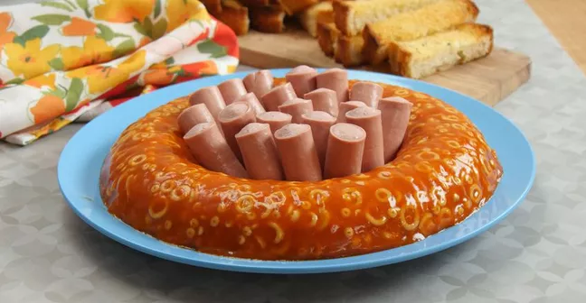

spaghetti-o-jello 🍝

Description
something something
Cooking time : Very long
Caloric intake per serving : A lot
Ingredients (serves your whole family)
- ¼ cup rain water
- ¼ cup condensed tomato soup
- 2 (¼ ounce) packets unflavored gelatin
- 2 cans Spaghetti-Os
- 5 big juicy sausages
Steps
- In a large pot, pour in your rain water and condensed tomato soup, then sprinkle the gelatin on top.
- Allow gelatin to bloom in the water for 10 minutes.
- Once gelatin has bloomed, stir together lightly.
- Place the pot on the stove and turn the heat to medium, then keep stirring occasionally until the gelatin has completely dissolved, and the mixture is quite smooth.
- Turn off the heat and add the Spaghetti-Os to the pot.
- Mix until well-combined, then pour evenly into 4 cup ring mold.
- Refrigerate mold for 4 hours or overnight.
- When ready to serve, loosen mold by placing in a bowl of warm water, then invert onto a plate.
- Serve with sausages.